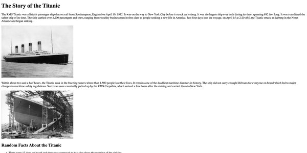
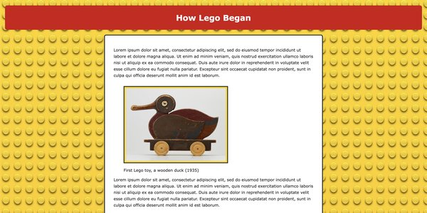

Assignment 1 – Titanic

My first HTML page, built around Titanic passenger data. It covers basic page structure, a header/main/footer layout, and a table of key facts about the ship.
View assignmentThis is my portfolio page for CSCE 242, where I am posting the assignments I complete throughout the semester. an undergraduate 3-credit course titled Web Applications (historically known as Client-Server Computing). This course covers modern web technologies, design methods, and programming tools used to build client-server software and interactive applications.
View my GitHub repository
My first HTML page, built around Titanic passenger data. It covers basic page structure, a header/main/footer layout, and a table of key facts about the ship.
View assignment
A styled page on how Lego got its start, from Ole Kirk Christiansen's carpentry shop to the patented brick design. Focused on custom CSS: color theming, a formatted content div, and a bordered table of key dates.
View assignment
A redesign of this main portal page using Flexbox to lay out assignment and project cards, with a media query so the layout switches from a row to a stacked column on smaller screens.
View assignment
Proposal outlining the topic and goals for my semester-long project in this course. More details and a working build will be added here as the project develops.
View topic PDF